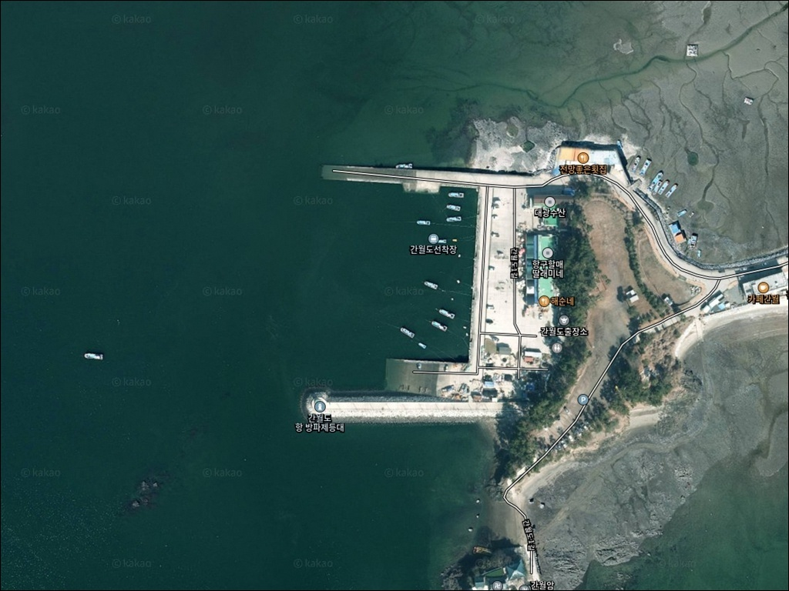
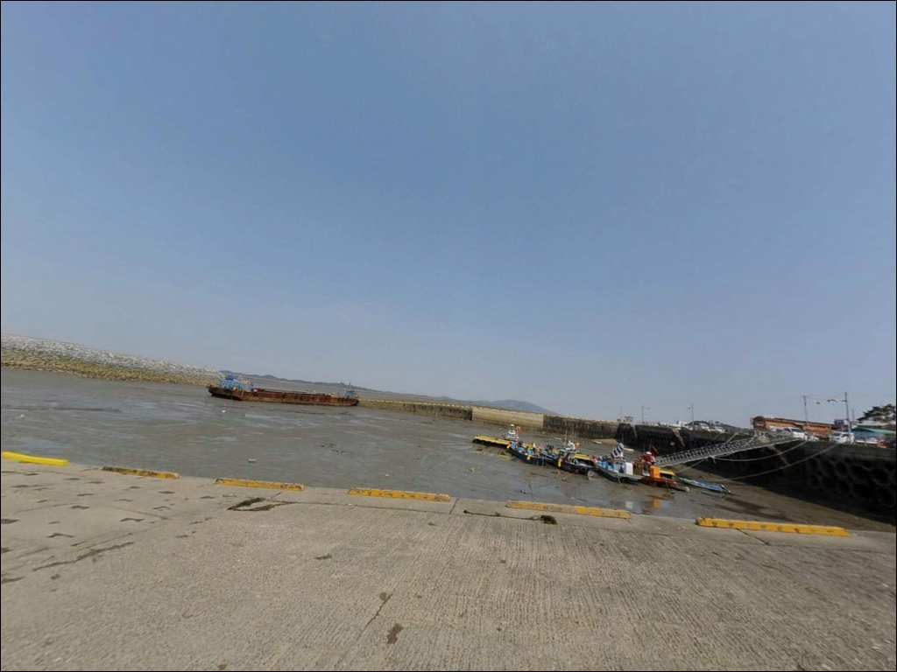
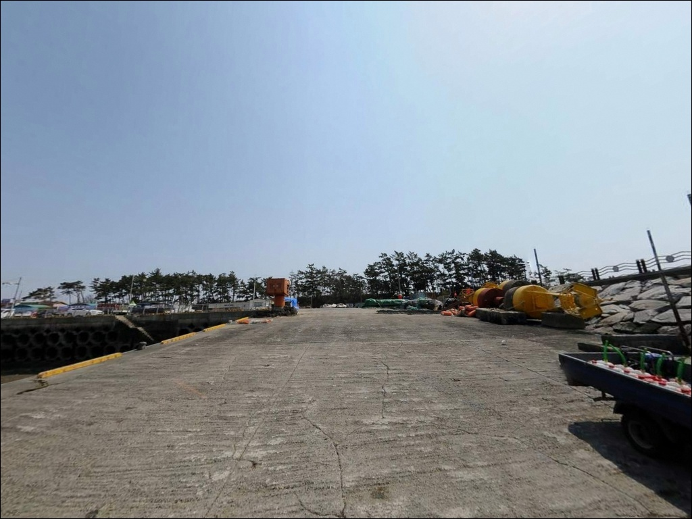
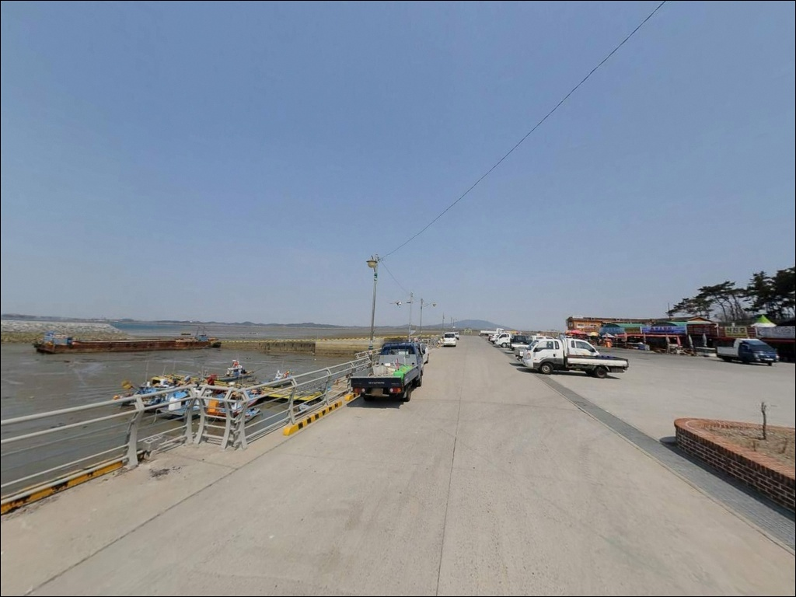
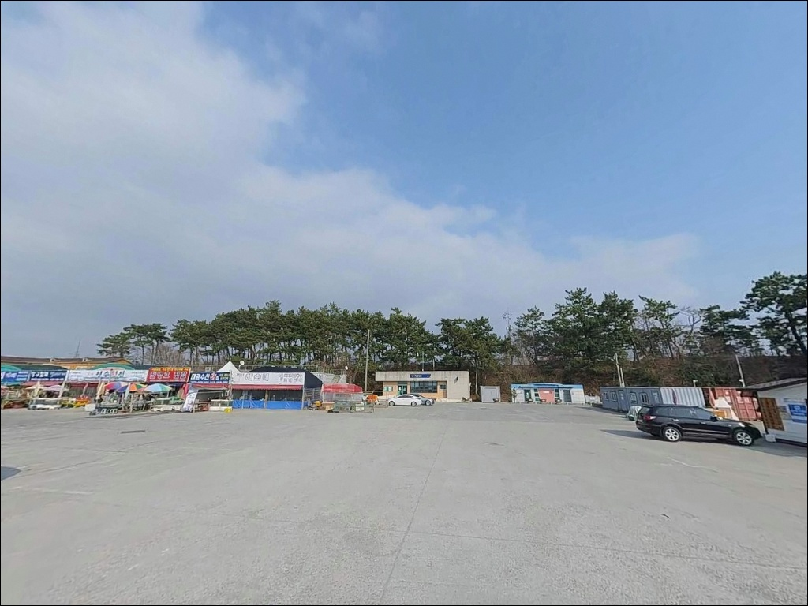
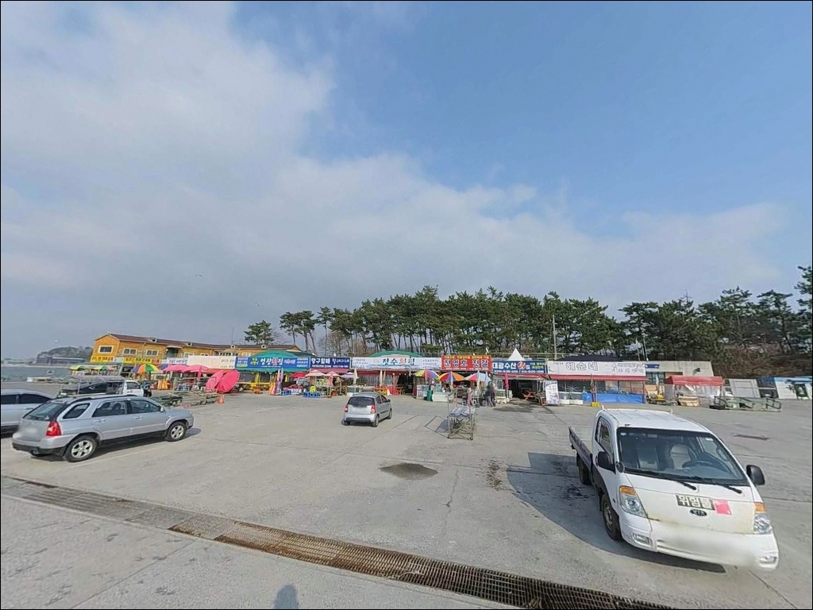
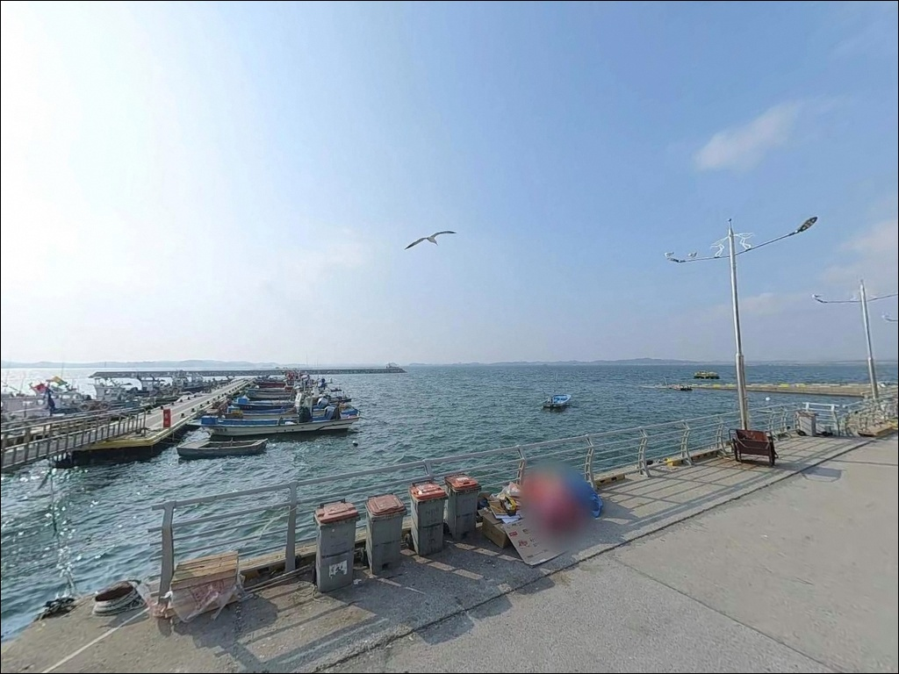
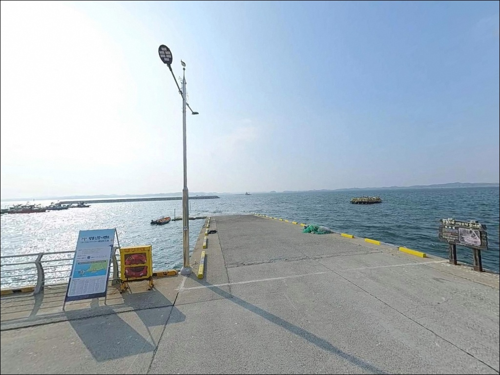
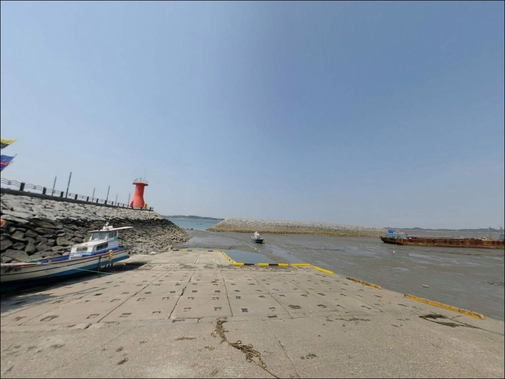

이 페이지에는 광고(제휴 링크 포함)가 있으며, 광고 링크를 통해 구매하면 운영자가 판매 수익 또는 수수료를 받을 수 있습니다. 포인트 사진: 카카오맵 스카이뷰·로드뷰. 이 페이지의 지도·사진 이미지는 카카오맵의 실제 서비스 이미지와 다를 수 있습니다.

간월도항
충남 서산시 부석면 간월도리 26-28
서해 방파제라서 채비를 얕게 세팅하고 들어갔다간
이 포인트의 핵심 구간을 통째로 놓치게 됩니다.
만조 기준 7~8m 수심이 나오는 방파제 끝단은
서산·태안권 일반 방파제와
구조 자체가 다른 포인트입니다.
얕은 채비만 들고 가면
외항 테트라포드 주변을 제대로 공략하지 못한 채
돌아오는 경우가 생깁니다.
충남 서산시 부석면 간월도리,
간월암 바로 옆에 자리한 이 방파제는
1995년 지방어항으로 지정된 이래
방파제 길이 154m, 외항 방향 테트라포드 구조로
감성돔·우럭·주꾸미가 시즌마다 기대되는
천수만권 대표 낚시 포인트 중 하나입니다.
이 글은 간월도항의
진입 여건, 차박 가능성, 물때 판단 기준,
낚시 스타일별 공략 조건에 집중합니다.
조황 단정이나 특정 어종 보장은
이 글의 범위에 포함되지 않습니다.

간월도는 1980년대 말 천수만 간척 사업으로
육지와 연결된 지역입니다.
서산A지구방조제와 이어지는 도로망이 잘 갖춰져 있어
차량 진입 자체에 어려움은 없습니다.
간월도1길 방향 포장도로를 따라
방파제 입구까지 진입이 가능합니다.
관광버스와 일반 승용차가 동시에 드나드는 구조라
회차 공간은 비교적 넉넉한 편입니다.
대형 SUV나 캠핑 장비를 갖춘 차량도
진입·회차 자체에는 큰 제약이 없는 수준입니다.
주차는 간월암 입구 공영주차장이
무료 이용이 확인된 기본 후보입니다.
방파제 초입 공터도 활용 가능성이 있으나
어민 작업 동선과 겹치지 않는 자리를
먼저 확인하는 것이 기본입니다.

간월도항 일대는 어리굴젓 판매장, 굴돌솥밥집, 횟집이
방파제 초입에 밀집된 관광·어촌 복합 지역입니다.
낮 시간대에는 방문객 차량과 상권 이용 인파가 상당한 편이어서
전형적인 조용한 차박지로 보기는 어렵습니다.
야간에는 관광객 이동이 줄어들어
비교적 조용해지는 경향이 있으나,
상권과 민가가 인접한 만큼
프라이버시는 제한적입니다.
방파제 등대가 야간에도 점등 운영 중이라
낚시 목적의 야간 시야 확보는 가능한 편입니다.
다만 테트라포드 구간은 등대 불빛이
발밑까지 충분히 닿지 않으므로
개인 헤드랜턴은 반드시 별도로 준비해야 합니다.
차박이란 차량을 숙박 공간으로 활용하며
낚시 현장에서 하룻밤 머무는 여행 방식입니다.
간월도항에서 차박을 계획한다면
공영주차장 야간 이용 가능 여부를
현장 안내 표지를 통해 확인하는 것이 선행되어야 합니다.

방파제 초입 도보권 내에
어리굴젓 판매장, 굴돌솥밥집, 횟집이 여러 곳 있습니다.
낚시 후 식사 해결이나 수산물 구입은
포인트 이동 없이 가능한 여건입니다.
편의점·마트·주유소 위치는
반경 3km 내에서 출처를 확인하지 못했습니다.
간월도 진입 전 구간에서
연료와 편의 물품을 미리 보충하는 것이 현실적입니다.
간월도캠핑장이 간월달발길 일대에 운영 중입니다.
항구 분위기보다 정돈된 환경에서
체류를 원하는 경우 참고할 수 있으며,
연락처는 010-4164-7676으로
방문 전 예약 가능 여부를 확인하는 편이 좋습니다.

간월도항 방문에서 가장 먼저 확인할 것은
물때입니다.
서해안은 조수 간만의 차가 크고,
이 포인트는 수위 변화에 따라
낚시 가능 시간대가 좁아집니다.
바다타임에서 간월도 기준 물때를 확인하고
만조 전후 타이밍을 기준으로
출발 시간을 역산하는 것이 기본 전략입니다.
간조 타이밍에 맞춰 채비를 조정하지 않으면
서해 방파제에서 낚시 가능 시간이
절반 이하로 줄어드는 경우가 많습니다.
방파제 끝단 테트라포드 구조상
밑걸림이 잦은 편이므로
여분 봉돌과 목줄은 넉넉하게 준비하는 것이 기본입니다.
방파제 테트라포드 구간은 발판이 고르지 않아
야간에 미끄럼 사고가 발생하기 쉬운 구조입니다.
구명조끼 착용과 미끄럼 방지 신발은
주간·야간 구분 없이 기본 안전 장비입니다.
관광지 특성상 낚시 구역과 관광객 동선이
겹치는 구간이 생기므로
자리 선택 시 동선 확인이 먼저입니다.

간월도항 방파제는 길이 154m로
외항 방향으로 뻗어 있으며,
끝단에는 2019년 6월 점등된
빨간 원추형 등대가 설치되어 있습니다.
테트라포드가 외항 쪽으로 깊게, 멀리까지 잠겨 있는 구조로
이 구간이 이 포인트의 핵심 낚시 자리입니다.
만조 기준 방파제 끝단 수심은 7~8m로 알려져 있습니다.
서산·태안권 일반 방파제가 간조 시
바닥이 드러나는 것과 달리,
이 포인트는 낚시 가능 시간대가 상대적으로 긴 편입니다.
방파제 끝단 테트라포드 주변은 수심 변화가 가장 뚜렷한 구간으로,
릴찌채비 운용 효율이 가장 높은 자리입니다.
내항 석축 구간은 암반과 뻘이 혼재하는 바닥 구조입니다.
원투 채비를 내항 쪽으로 보내면
붕장어·우럭을 노리는 방식과 잘 맞는 편이며,
항 입구 수로 구간은 조류가 집중되는 지점으로
루어 운용에도 탐색해볼 만한 조건이 형성됩니다.
출조 전 최신 조황은 "간월도항 조황"으로
검색해 보시기 바랍니다.

방파제 끝단을 주력으로 공략한다면
릴찌낚시가 가장 어울립니다.
테트라포드 사이 수심 있는 공간을
찌채비로 공략하는 방식이
이 포인트 구조에 잘 맞으며,
봄~초여름 시즌에는
방파제 끝단에서 감성돔이 기대되는 타이밍입니다.
가을 이후에는 학꽁치가 붙는 시즌으로
내항 쪽 찌낚시도 유효한 방식입니다.
원투낚시도 유효합니다.
내항 석축 구간을 중심으로
붕장어와 우럭을 대상으로 채비를 보내는 방식이
여름~가을 시즌에 잘 맞는 편입니다.
바닥에 암초와 뻘이 섞여 있어
밑걸림이 발생하는 구간이 있으므로
채비 손실을 감안한 여분 준비가 필요합니다.
주꾸미와 갑오징어 시즌에는
항 입구 수로 구간에서 에깅을 시도해볼 수 있습니다.
가을 시즌 주꾸미는 내항 전역에서도
올라오는 것으로 알려진 포인트입니다.
루어낚시는 방파제 꺾이는 구간과
항 입구 쪽 조류가 모이는 지점을 중심으로
탐색형 캐스팅이 어울리는 구조입니다.

간월도항이 인파로 붐비거나
조황이 여의치 않을 경우,
같은 천수만 권역에서 가장 현실적인 대안은
삼길포입니다.
대호방조제 끝 지점에 위치한 방파제로
방파제 꺾이는 구간과 끝단, 주차장 앞 석축이 낚시 자리입니다.
우럭·돌가자미·붕장어를 비롯한 다양한 어종이
기대되는 포인트로 알려져 있습니다.
서산B지구방조제도 이 권역에서
검토해볼 만한 대안입니다.
원투낚시 중심으로 농어, 숭어, 민어, 도다리가
대상 어종으로 알려진 곳이며,
주차 공간이 갖춰진 편입니다.
간월도항에서 이동 시
삼길포와 B지구방조제를 묶어서
돌아보는 동선이 효율적입니다.
차박 여건을 우선한다면
간월도 외곽 해안도로 쪽이
관광지 인파에서 상대적으로 거리를 둘 수 있는 후보입니다.
삼길포 주차 공간도 규모가 큰 편으로
낚시와 차박을 병행하기 좋다는
참고 후기가 있는 대안이기도 합니다.

릴찌낚시로 감성돔을 노리거나
원투낚시로 내항 바닥을 공략하는 방식을
즐기는 낚시인이라면
간월도항 방파제의 구조는
잘 맞는 여건을 갖추고 있습니다.
서해 방파제치고 깊은 수심이
시즌마다 다양한 어종과의 접점을 만들어주는 포인트입니다.
반면 물때 확인 없이 간조 타이밍에 도착하거나,
얕은 채비만 준비해 간다면
이 포인트의 핵심을 살리지 못하는 경우가 생깁니다.
물때 확인, 릴찌 채비 병행, 테트라포드 밑걸림 대비,
이 세 가지를 갖추고 진입한다면
천수만 서해안에서 기억에 남는 출조가 될 수 있는 곳입니다.
관광지와 바로 붙어 있어
낚시 후 식사 해결이 편리한 위치이며,
야간은 비교적 조용해지는 환경이라
낚시와 간단한 차박을 함께 계획하는 출조라면
공영주차장 야간 이용 가능 여부만
현장에서 먼저 확인해두면
충분히 활용 가능한 포인트입니다.